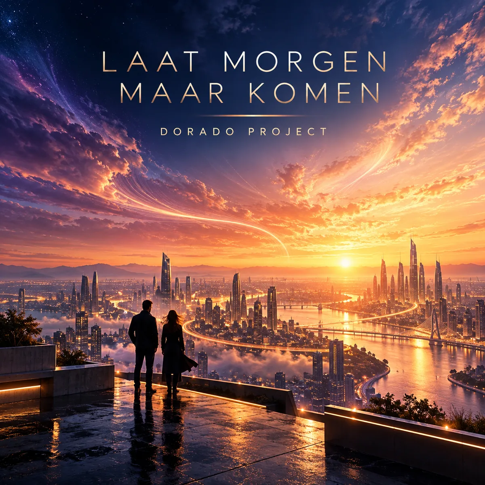

SINGLE · SYNTHPOP
Laat Morgen Maar Komen
Dutch synthpop
Een groots Nederlandstalig synthpopnummer voor het eerste licht boven de stad. Warm, hoopvol en gebouwd rond een meezingbaar refrein.
Luister op Spotify →
SINGLE · SYNTHPOP
Dutch synthpop
Een groots Nederlandstalig synthpopnummer voor het eerste licht boven de stad. Warm, hoopvol en gebouwd rond een meezingbaar refrein.
Luister op Spotify →Van synthpop tot rock: ontdek de andere nummers en het verhaal achter Dorado Project.
Bekijk alle nummers →